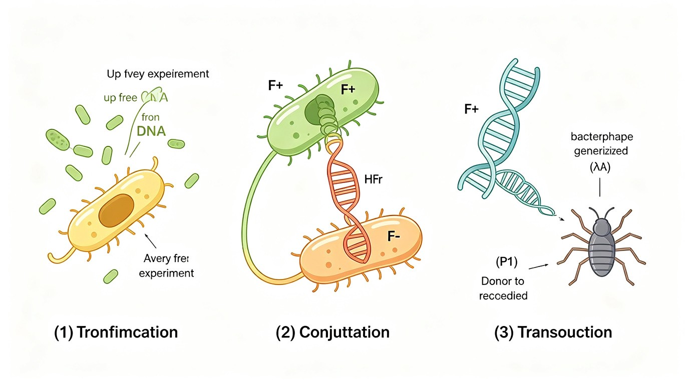

本节目录
细菌遗传学概述
一、细菌作为遗传学研究材料的优点
细菌（尤其是大肠杆菌 Escherichia coli）是分子遗传学与微生物遗传学最重要的模式生物。相比真核生物，细菌作为遗传学研究材料具有四大突出优点：
- ①繁殖快：大肠杆菌在适宜条件下约 20～30 min 分裂一代，一天可繁殖数十代，便于在短时间内获得大量世代和海量子代，适合统计分析与突变筛选。
- ②基因组小：通常只有单条环状染色体（无核膜包被），基因组大小远小于真核生物，便于全基因组分析与突变定位。
- ③单倍体：基因组只有一份拷贝，表型直接反映基因型——没有显隐性掩盖，任何突变（包括隐性致死）都能在表型上直接表现，利于筛选突变型。
- ④易于大量培养和筛选：可在液体培养基中大量培养，也能在固体平板上形成单菌落；利用选择培养基和鉴别培养基可高效筛选重组子、突变型或营养缺陷型（如影印培养法、梯度平板法）。
二、大肠杆菌基因组概况
大肠杆菌 K12 基因组是细菌遗传学的标准参照：
- 结构：单条环状双链 DNA（dsDNA）染色体，无内含子，基因排列紧密，几乎无冗余序列。
- 大小：约 4.6 Mb（4.6 × 10⁶ bp）。
- 基因数：约 4300 个基因，编码蛋白质、rRNA、tRNA 等。
- 复制：单一复制起点 oriC，双向复制，整个染色体复制约需 40 min（富营养下可与细胞分裂重叠）。
- 染色体外遗传元件：质粒（plasmid）——如 F 因子、R 因子（抗药性质粒）、Col 质粒（产大肠菌素）等，可独立复制，赋予细菌额外性状。
三、细菌遗传物质交换的三种方式
细菌虽为无性繁殖（二分裂），但存在三种遗传物质交换方式，是细菌遗传多样性的重要来源，也是细菌遗传学研究的核心内容：
- 转化（Transformation）：受体菌直接摄取环境中的外源游离 DNA 片段并整合到自身基因组。
- 接合（Conjugation）：供体菌与受体菌通过细胞直接接触（性菌毛连接），将 DNA（通常是质粒或部分染色体）从供体转移到受体。
- 转导（Transduction）：以噬菌体为媒介，将供体菌的 DNA 片段转移到受体菌。

三种基因转移方式的详细实验对比：
- 转化（Griffith 1928 / Avery 1944）：肺炎链球菌SIII型加热杀死→与R型活菌混合注射小鼠→小鼠死亡并分离出活S型菌。Avery进一步体外证明：提取S型菌的DNA（而非蛋白质/多糖）能使R型转化为S型→DNA是遗传物质。转化需要受体菌处于感受态（competence），摄取双链DNA后一条链降解，单链与受体染色体同源重组整合。
- 接合（Lederberg & Tatum 1946 / Davis U型管 1950）：大肠杆菌A（met⁻bio⁻thr⁺leu⁺）×B（met⁺bio⁺thr⁻leu⁻）→基本培养基上出现原养型菌落（met⁺bio⁺thr⁺leu⁺），频率约10⁻⁷。Davis U型管实验证明：两菌用滤膜隔开（仅允许培养基通过，不允许细胞接触）→不出现重组子→接合需要细胞直接接触。后续证明F因子（质粒）介导接合，F⁺×F⁻转移F因子，Hfr×F⁻转移染色体基因。
- 转导（Zinder & Lederberg 1952）：用鼠伤寒沙门氏菌做U型管实验发现：两株营养缺陷型用滤膜隔开仍能产生重组子→不同于大肠杆菌的接合。进一步证明是噬菌体P22介导的基因转移。普遍性转导：噬菌体裂解感染时错误包装宿主DNA片段（可包装任何基因）；局限性转导：λ噬菌体从染色体切离时错误带走相邻基因（如gal/bio）。
转化（Transformation）
一、转化的定义
转化（Transformation）：受体菌直接摄取外源 DNA 片段，并将其整合到自己的基因组中，从而获得新遗传性状的过程。转化是最早发现的细菌基因转移方式，也是证明 DNA 是遗传物质的关键实验基础。
转化发生的两个关键环节：①摄取——受体菌摄取外源双链 DNA；②整合——外源 DNA（通常一条链）通过同源重组整合进受体染色体，使受体稳定获得供体性状。
二、Griffith 实验（1928）——肺炎链球菌转化实验
Griffith 实验（1928）：英国细菌学家 Frederick Griffith 以肺炎链球菌（Streptococcus pneumoniae，旧称肺炎双球菌）为材料，首次观察到细菌"转化"现象。
两种菌型：
- S 型（Smooth，光滑型）：有荚膜（多糖），菌落光滑，致病（注射小鼠致死）。
- R 型（Rough，粗糙型）：无荚膜（因基因突变失去合成荚膜能力），菌落粗糙，不致病（注射小鼠存活）。
实验设计：将加热杀死的 S 型细菌与活的 R 型细菌混合后注射小鼠，结果：
- 单独注射活 R 型 → 小鼠存活（不致病）。
- 单独注射加热杀死的 S 型 → 小鼠存活（已死，不致病）。
- 混合注射（加热杀死 S 型 + 活 R 型）→ 小鼠死亡，并从死亡小鼠体内分离出活的 S 型细菌（有荚膜、致病）。
结论：加热杀死的 S 型细菌中存在某种"转化因子"（transforming principle），能使活的 R 型细菌转变为 S 型细菌，且这种转变是可遗传的。但 Griffith 当时并未确定转化因子的化学本质。
三、Avery 实验（1944）——体外转化证明 DNA 是遗传物质
Avery-MacLeod-McCarty 实验（1944）：Oswald Avery 等人在体外重复并深化了 Griffith 实验，目的是确定"转化因子"的化学本质。
实验思路：从 S 型细菌中提取细胞提取物（含 DNA、RNA、蛋白质、多糖等），将其与活 R 型细菌混合进行体外转化；并将提取物分别用不同的酶处理，观察哪种处理会使转化能力丧失：
- 用 蛋白酶处理 S 型提取物 → 转化能力保留（蛋白质不是转化因子）。
- 用 RNase（核糖核酸酶）处理 → 转化能力保留（RNA 不是转化因子）。
- 用 DNase（脱氧核糖核酸酶）处理 → 转化能力丧失（DNA 被降解后无法转化）。
- 用 多糖酶处理（去除荚膜多糖）→ 转化能力保留。
结论：只有 DNase 处理组失去转化能力 → DNA 是遗传物质（即"转化因子"）。这是历史上第一次用实验直接证明 DNA（而非蛋白质或 RNA）是遗传物质。
四、转化的分子机制
转化的分子机制（以自然转化为例）可分为四个连续步骤：
- ①感受态细胞（competent cell）：处于能摄取外源 DNA 的特殊生理状态的细胞。感受态是细菌发育到一定阶段（常在对数生长后期）出现的，由感受态因子（一种小分子蛋白）诱导；并非所有细菌都能自然形成感受态（如肺炎链球菌、枯草芽孢杆菌可自然形成，大肠杆菌通常不能）。
- ②外源 DNA 结合到细胞表面：双链外源 DNA 通过非特异性受体结合到感受态细胞表面（肺炎链球菌表面有 DNA 结合蛋白）。
- ③一条链被降解，另一条链进入细胞：核酸酶将双链 DNA 的一条链降解，另一条单链 DNA 穿过细胞膜进入细胞质（以单链形式进入）。
- ④同源配对并整合：进入细胞的单链 DNA 与受体染色体同源区段配对，通过同源重组整合进受体染色体，RecA 蛋白参与这一重组过程。整合后受体细胞获得供体的相应基因。
五、自然转化与人工转化
自然转化（natural transformation）：某些细菌在生长特定阶段自然形成感受态，可直接摄取环境 DNA。代表：肺炎链球菌、枯草芽孢杆菌（Bacillus subtilis）、流感嗜血杆菌等。
人工转化（artificial transformation）：对不能自然形成感受态的细菌（如大肠杆菌），通过人工处理诱导其摄取外源 DNA。常用方法：
- CaCl₂ 处理法：用低温 CaCl₂ 处理大肠杆菌，使细胞膜通透性增加，可摄取质粒 DNA（化学转化）。
- 电穿孔（electroporation）：用短暂高压电脉冲在细胞膜上打孔，使 DNA 进入细胞，转化效率高，适用于多种细菌。
人工转化是基因工程中将重组质粒导入宿主菌的核心技术。
§2 竞赛要点小结：
- Griffith 实验 → "转化因子"：活体转化现象，提出转化因子概念，未确定其本质。
- Avery 实验 → DNA 是遗传物质：酶解排除法，只有 DNase 处理使转化丧失。
- 转化需感受态细胞：自然感受态（肺炎链球菌）vs 人工诱导（CaCl₂/电穿孔）。
- 转化机制：双链结合 → 单链进入 → RecA 介导同源重组整合。
接合（Conjugation）
一、Lederberg & Tatum 实验（1946）——接合现象的发现
Lederberg & Tatum 实验（1946）：Joshua Lederberg 和 Edward Tatum 以大肠杆菌 K12 菌株为材料，首次发现细菌间的接合现象（也因此获诺贝尔奖）。
实验设计：选用两株多重营养缺陷型大肠杆菌（在基本培养基上均不能生长）：
- A 品系：met⁻ bio⁻ thr⁺ leu⁺（甲硫氨酸、生物素缺陷，苏氨酸、亮氨酸正常）。
- B 品系：met⁺ bio⁺ thr⁻ leu⁻（甲硫氨酸、生物素正常，苏氨酸、亮氨酸缺陷）。
将 A、B 两品系混合培养数小时后，涂布到基本培养基（不含任何氨基酸/维生素）上，结果长出 原养型（prototroph）菌落（met⁺ bio⁺ thr⁺ leu⁺，全部基因正常）。而 A、B 单独培养在基本培养基上均不长菌落。
结论：A、B 两品系间发生了遗传物质交换，产生了重组的原养型菌株。这是细菌接合现象的首次实验证据。
二、Davis U 型管实验——证明需要细胞直接接触
Davis U 型管实验（1950）：Bernard Davis 设计 U 型管，中间用细菌滤片（玻璃滤器）隔开，两臂分别接种 A 品系和 B 品系。滤片允许培养基（及其中可能存在的游离 DNA、可溶性物质）自由通过，但阻止细菌细胞直接接触。
实验结果：培养一段时间后，从两臂分别取样涂布基本培养基，均未长出原养型菌落。
结论：遗传物质交换需要细菌细胞直接接触，排除了转化（游离 DNA 通过培养基转移）的可能，证明 Lederberg-Tatum 实验中观察到的基因转移是通过细胞间直接接触实现的，即"接合"。
三、F 因子（致育因子 / fertility factor）
F 因子（F factor / 致育因子 fertility factor）：决定大肠杆菌接合能力的质粒，是接合现象的分子基础。
F 因子的性质：
- 是一种附加体（episome）——即可游离于染色体之外独立存在（作为质粒），也可整合到宿主染色体上（作为染色体一部分）的遗传元件。
- 结构：环状双链 DNA（dsDNA），约 100 kb，含转移基因（tra 基因簇，编码性菌毛和转移装置）、复制起点（oriV）和转移起点（oriT）等。
- 编码性菌毛（sex pilus / F pilus）：使供体菌能连接受体菌。
F⁺ 与 F⁻ 菌株：
- F⁺（供体菌）：含有游离 F 因子，具性菌毛，为接合供体。
- F⁻（受体菌）：不含 F 因子，无性菌毛，为接合受体。
- F⁺ × F⁻ 接合：F 因子通过性菌毛连接转移给 F⁻ 菌，受体菌变为 F⁺。通常只转移 F 因子本身，不转移染色体基因。
F 因子转移机制：供体菌通过性菌毛（sex pilus）与受体菌连接并拉近形成接合桥；F 因子在 oriT 处产生缺口，一条链通过滚环复制（Rolling Circle）方式从供体转移到受体；进入受体的单链作为模板合成互补链，形成双链 F 因子并环化，受体变为 F⁺。供体菌通过滚环复制保留 F 因子拷贝，仍为 F⁺。
四、Hfr 菌株（高频重组型）
Hfr 菌株（High frequency recombination，高频重组型）：当 F 因子整合到大肠杆菌染色体上时，形成的菌株称为 Hfr 菌株。因 F 因子整合后能高频带动染色体基因转移，故得名。
Hfr 的形成：F 因子通过同源重组（F 因子上的插入序列 IS 与染色体上对应 IS 序列之间重组）整合到染色体特定位点，形成 Hfr 菌株。整合是可逆的（切离可恢复为 F⁺）。
Hfr × F⁻ 接合：
- F 因子起始转移，但此时转移的是整合了 F 因子的染色体——F 因子的一部分（起始端）先转移，随后带动相邻的染色体基因依次转移。
- 由于染色体很长，转移通常不能完全完成（接合桥易中途断裂），只有靠近 F 因子整合位点的染色体基因能高效转移。
- 受体菌仍为 F⁻（因 F 因子的转移起始端先进入，但末端转移基因 tra 位于最后，通常未能转移，故受体不能成为 F⁺）。
- 转移进受体的单链染色体片段通过同源重组整合进受体染色体，使受体获得供体基因（形成部分二倍体的瞬时状态后被重组替换）。
五、中断杂交实验（Wollman & Jacob，1956）——基因定位
中断杂交实验（interrupted mating experiment）：Wollman 和 Jacob（1956）利用 Hfr 菌株与 F⁻ 菌株接合，在不同时间点用搅拌器（组织捣碎机）剧烈搅拌中断接合，然后分析受体菌在什么时间获得了哪些供体基因，从而确定基因在染色体上的排列顺序和相对位置。
实验设计：
- Hfr 菌株（供体，如 met⁺ ... 染色体标记）× F⁻ 菌株（受体，带不同营养缺陷或抗性标记）。
- 混合后每隔一定时间（如 5、10、15、20、25 min...）取样，用搅拌器中断接合。
- 将受体菌涂布于不同选择培养基，检测其何时获得某个供体基因（如 azi、ton、lac、gal、trp、his 等）。
实验结果与结论：
- 不同基因进入受体的时间不同且先后有序——先进入的基因在更早的时间点就能在受体中检测到，后进入的基因需要更长时间。
- 基因转移的顺序 = 染色体上的排列顺序。
- 各基因进入受体的时间差 = 基因间的相对距离，故可用"分钟（min）"为单位定位基因，构建大肠杆菌遗传图谱。
- 由于染色体是环状的，基因呈环状排列；不同 Hfr 菌株（F 因子整合位点不同）转移起点和方向不同，但综合多个 Hfr 菌株数据可拼出完整的环状染色体遗传图谱（约 100 min）。
- 基因转移顺序取决于F 因子整合的位置和方向。
六、F' 因子（F prime factor）与部分二倍体
F' 因子（F prime factor）：当 Hfr 菌株中的 F 因子从染色体上异常切离时，偶尔会携带相邻的一段染色体基因一起切离，形成的 F 因子称为 F' 因子（即携带了宿主染色体基因的 F 因子）。
F' × F⁻ 接合：
- F' 因子转移到 F⁻ 受体菌后，受体菌变为F'（同时获得 F 因子和携带的染色体基因）。
- 受体菌因此对该染色体基因形成部分二倍体（merodiploid / 部分合子）——即该基因在受体中存在两份拷贝（自身染色体一份 + F' 携带一份）。
- 部分二倍体是互补测验的重要工具（见 §6）：可用 F' 因子将一个等位基因导入带另一突变等位基因的受体，检验二者能否互补。
F⁺ / Hfr / F' 三者关系：F⁺（游离 F 因子，不转染色体）→ F 因子整合 → Hfr（整合态，高频转染色体）→ F 因子切离（正常切离恢复 F⁺ / 异常切离带基因 → F'）。
§3 竞赛要点小结：
- F⁺ / F⁻ / Hfr 的区别：F⁺ 含游离 F 因子（只转 F 因子）；F⁻ 无 F 因子（受体）；Hfr 的 F 因子整合到染色体（高频转染色体基因，受体仍 F⁻）。
- U 型管实验排除转化：物理隔离但共用培养基不长原养型→需细胞直接接触→是接合而非转化。
- 中断杂交 → 基因定位 → 环状图谱：基因转移顺序=染色体排列顺序，时间差=图距（min），构建环状遗传图谱（约 100 min）。
- F' 因子：异常切离带染色体基因，形成部分二倍体，用于互补测验。
- F 因子是附加体：可游离可整合，编码性菌毛，滚环复制转移单链。
转导（Transduction）
一、转导的定义
转导（Transduction）：以噬菌体为媒介，将供体菌的 DNA 片段转移到受体菌并使其获得新遗传性状的过程。转导由 Zinder 和 Lederberg（1952）在鼠伤寒沙门氏菌中首先发现。
转导的关键在于噬菌体在包装或切离过程中"误装"了宿主 DNA，将其带入新宿主。根据转导基因的范围和机制，分为普遍性转导和局限性转导两大类。
二、普遍性转导（generalized transduction）
普遍性转导：由毒性（裂解性）噬菌体（如 P1 噬菌体）介导，可转导供体菌染色体上任何基因的转导方式。
机制：
- 噬菌体感染供体菌 → 进入裂解期（lytic cycle）：噬菌体复制并合成外壳蛋白，同时宿主染色体被降解成片段。
- 错误包装：在装配子代噬菌体时，偶尔会错误地将一段宿主染色体 DNA 片段包装进噬菌体外壳（代替噬菌体 DNA），形成转导噬菌体（transducing phage）——它只含宿主 DNA，不含（或部分不含）噬菌体 DNA，无复制能力。
- 转导噬菌体感染受体菌 → 注入供体 DNA（而非噬菌体 DNA）→ 供体 DNA 通过同源重组整合到受体染色体 → 受体获得供体基因。
特点：
- 可转导任何基因（因宿主 DNA 是随机被降解和包装的，任何染色体片段都有机会被包装）。
- 转导频率低（约 10⁻⁵～10⁻⁶，因错误包装是偶发事件）。
- 代表：P1 噬菌体转导大肠杆菌。
共转导（cotransduction）：两个基因同时被同一个噬菌体包装并转导到同一受体的现象。共转导频率越高，说明两个基因在染色体上距离越近（因为噬菌体头部能容纳的 DNA 量有限，只有距离近的基因才能被同一段 DNA 同时包装）。共转导可用于基因精细定位。
三、局限性转导（specialized / restricted transduction）
局限性转导（specialized transduction）：由温和噬菌体（如 λ 噬菌体）介导，只能转导整合位点附近的特定基因的转导方式。
机制：
- 温和噬菌体（如 λ）感染细菌后，可通过位点特异性重组整合到宿主染色体的特定位点——attB 位点（位于 gal 和 bio 基因之间），成为原噬菌体（prophage），随宿主分裂传递（溶源状态）。
- 诱导（如紫外线照射）后，原噬菌体正常切离进入裂解途径。但偶尔发生异常切离（错误切离）——切离位置偏离，将相邻的宿主基因（gal 或 bio）一起切下，带走一部分宿主 DNA，同时留下部分噬菌体 DNA。
- 形成缺陷型转导噬菌体（如 λdg——携带 gal 基因的缺陷型 λ 噬菌体，因缺失部分自身 DNA 而不能单独完成裂解）。
- 缺陷型噬菌体感染受体菌 → 将携带的 gal 或 bio 基因注入受体 → 整合 → 受体获得该特定基因。
特点：
- 只能转导整合位点附近的特定基因（λ 只能转导 gal 或 bio）。
- 代表：λ 噬菌体转导大肠杆菌 gal/bio 基因。
- 异常切离频率低（约 10⁻⁵）。
四、普遍性转导 vs 局限性转导对比
| 特征 | 普遍性转导（Generalized） | 局限性转导（Specialized） |
|---|---|---|
| 噬菌体类型 | 毒性（裂解性）噬菌体，如 P1 | 温和噬菌体，如 λ |
| 转导基因范围 | 任何基因（随机包装宿主 DNA） | 整合位点附近的特定基因（λ 转导 gal/bio） |
| 发生时期 | 裂解期（装配时错误包装） | 诱导原噬菌体切离时（异常切离） |
| 分子机制 | 错误包装宿主染色体 DNA 片段 | 异常切离携带相邻染色体基因 |
| 转导噬菌体 | 含宿主 DNA，不含噬菌体 DNA（完全缺陷） | 含部分宿主 DNA + 部分噬菌体 DNA（部分缺陷，如 λdg） |
| 整合状态 | 噬菌体不整合（裂解性，无原噬菌体） | 先整合为原噬菌体（attB 位点），再切离 |
| 共转导应用 | 可用于基因定位（共转导频率∝基因距离近） | 仅限邻近基因（gal-bio 间） |
| 转导频率 | 低（~10⁻⁵～10⁻⁶） | 低（~10⁻⁵，异常切离） |
| 典型代表 | P1 转导大肠杆菌（任意基因） | λ 转导大肠杆菌 gal/bio 基因 |
§4 竞赛要点小结：
- 普遍性转导：P1 噬菌体，任何基因，错误包装宿主 DNA（裂解期）。
- 局限性转导：λ 噬菌体，特定基因（gal/bio），错误切离携带相邻基因（attB 位点附近）。
- 共转导：两基因同时被转导→距离近→可用于基因定位（仅普遍性转导）。
- 区分要点：错误包装 vs 错误切离；任何基因 vs 特定基因；毒性噬菌体 vs 温和噬菌体。
噬菌体遗传学
一、噬菌体的基本概念与类型
噬菌体（bacteriophage, phage）：感染细菌的病毒。噬菌体无细胞结构，由核酸基因组（DNA 或 RNA）和蛋白质外壳（衣壳）组成，必须寄生在活细菌内才能繁殖。噬菌体是遗传学（尤其分子遗传学早期）的重要模式生物。
常见噬菌体类型：
- T 偶数噬菌体（T2/T4）：dsDNA，感染大肠杆菌，结构复杂（头-尾-尾丝），裂解性（lytic）。T2 是 Hershey-Chase 实验的材料；T4 是 Benzer rII 实验的材料。
- λ 噬菌体：dsDNA，温和噬菌体（temperate），可选择裂解或溶源两条途径。
- T7 噬菌体：dsDNA，裂解性，感染大肠杆菌。
- φX174：单链 DNA 噬菌体（环状），是 Sanger 测定的第一个全基因组。
- MS2、Qβ：单链 RNA 噬菌体。
二、噬菌体的生活史
噬菌体感染细菌后，根据其生活策略分为两条途径：
裂解途径（lytic cycle）：毒性噬菌体（如 T2/T4/T7）和温和噬菌体（选择裂解时）遵循此途径：
- 吸附（attachment）：噬菌体尾丝特异性结合宿主菌表面受体。
- 注入 DNA：噬菌体通过尾鞘收缩将核酸注入宿主细胞内，蛋白质外壳留在外面（Hershey-Chase 实验据此证明 DNA 进入细胞）。
- 复制（replication）：利用宿主 machinery 复制噬菌体 DNA 并转录表达噬菌体蛋白。
- 装配（assembly）：噬菌体 DNA 与外壳蛋白自组装成完整子代噬菌体颗粒。
- 裂解释放（lysis & release）：噬菌体编码溶菌酶破坏宿主细胞壁，宿主裂解，释放大量子代噬菌体（一个感染周期可释放几十到上百个子代）。
溶源途径（lysogenic cycle）：温和噬菌体（如 λ）的另一选择：
- λ 噬菌体感染后，整合到宿主染色体的特定位点（attB），成为原噬菌体（prophage）。
- 原噬菌体随宿主染色体一起复制并随细胞分裂传递给子代，不裂解宿主（溶源状态，lysogeny）。
- 处于溶源状态的细菌称溶源性细菌（lysogen），对同种噬菌体的再感染具有免疫性（原噬菌体表达的阻遏蛋白抑制同种噬菌体复制）。
- 在诱导条件（如紫外线、丝裂霉素 C）下，原噬菌体可从染色体切离，进入裂解途径，产生子代噬菌体并裂解宿主。

三、噬菌体突变型
噬菌体突变型是噬菌体遗传学研究和作图的基础，常见的有两类：
- 宿主范围突变型（host range mutant, h⁺/h⁻）：能否感染不同大肠杆菌菌株的能力差异。
- 野生型 h⁺：只能感染某些菌株（如不能吸附到带抗性受体的菌株）。
- 突变型 h⁻：因尾丝蛋白突变，能吸附并感染更多菌株（包括对 h⁺ 有抗性的菌株）。
- 快速裂解突变型（rapid lysis mutant, r⁺/r⁻）：噬菌斑（plaque）形态/大小差异。
- 野生型 r⁺：形成小而混浊的噬菌斑（裂解较慢）。
- 突变型 r⁻：形成大而清晰的噬菌斑（快速裂解，裂解周期短）。
利用不同突变型噬菌体之间的杂交（混合感染），可研究噬菌体基因的重组与连锁关系。
四、噬菌体重组作图
噬菌体重组作图原理：两个不同突变型噬菌体同时感染同一宿主菌（混合感染，mixed infection），在宿主内噬菌体基因组间可发生遗传重组，产生重组型子代噬菌体。通过分析子代噬菌体的类型和比例，可计算重组率，进而对噬菌体基因作图。
Hershey 重组实验（1946）：Hershey 用 T2 噬菌体的两个突变型进行混合感染：
- 亲本 1：h⁺r⁺（野生型宿主范围 + 野生型裂解）。
- 亲本 2：h⁻r⁻（突变宿主范围 + 突变快速裂解）。
同时感染大肠杆菌后，子代噬菌体出现四种类型：
- 亲本型：h⁺r⁺ 和 h⁻r⁻（与亲本相同）。
- 重组型：h⁺r⁻ 和 h⁻r⁺（重组产生）。
重组率计算：重组率 = (重组型噬菌斑数 / 总噬菌斑数) × 100% = (h⁺r⁻ + h⁻r⁺) / (h⁺r⁺ + h⁻r⁻ + h⁺r⁻ + h⁻r⁺) × 100%。重组率可表示 h 和 r 两基因间的相对遗传距离。
结论：Hershey 实验证明噬菌体也能进行遗传重组，且重组率可用于基因作图，奠定了噬菌体遗传学的基础。
§5 竞赛要点小结：
- T2 噬菌体 h⁻-r⁻ 杂交 → 重组作图：四种子代（2亲本型 + 2重组型），重组率=重组型/总数。
- λ 噬菌体裂解/溶源选择：溶源（整合 attB，原噬菌体，免疫性）vs 裂解（诱导后切离进入裂解）。
- Hershey 重组实验（1946）：证明噬菌体也能遗传重组。
- 噬菌斑形态：r⁻ 大噬菌斑、r⁺ 小噬菌斑；h⁻ 宿主范围广。
基因的精细结构
一、顺反子（cistron）概念
顺反子（cistron）：由 Benzer 通过 T4 rII 实验提出的基因功能单位概念。一个顺反子 = 一个功能单位（即编码一条多肽链或一个功能 RNA 的遗传单位，相当于现代意义上的"基因"）。
顺反子概念通过顺反测验（cis-trans test）定义，核心是对比"顺式"与"反式"两种突变排布下的表型：
- 顺式（cis）：两个突变位于同一条 DNA 链上，另一条链为野生型（mut1 mut2 / + +）。
- 反式（trans）：两个突变分别位于两条不同的 DNA 链上（mut1 + / + mut2）。
判读规则（以二倍体/部分二倍体为准）：
- 顺式正常、反式异常 → 两个突变在同一基因（同一顺反子）内。因为顺式时另一条野生型链可提供正常功能；反式时两条链各带一个突变，无完整正常基因 → 功能丧失。
- 顺式正常、反式也正常 → 两个突变在不同基因（不同顺反子）内。因为反式时每个基因至少有一条野生型链提供功能 → 互补。
| 排列方式 | 基因型（两条链） | 两突变在同一顺反子 | 两突变在不同顺反子 |
|---|---|---|---|
| 顺式（cis） | mut1 mut2 / + + | 表型正常（+ + 链提供功能） | 表型正常（+ + 链提供功能） |
| 反式（trans） | mut1 + / + mut2 | 表型异常（无完整正常基因） | 表型正常（两基因各有野生型链，互补） |
| 结论 | — | 顺式正常、反式异常 → 同一顺反子 | 顺式正常、反式正常 → 不同顺反子 |
二、互补测验（complementation test）
互补测验（complementation test）：将两个突变型同时存在于同一细胞中，检验二者能否互相补充对方缺陷、恢复野生型功能的实验，用于判断两个突变是否在同一基因内。
原理：
- 若两个突变在不同基因 → 各自产生的正常基因产物可互补对方缺陷 → 功能恢复（互补）。
- 若两个突变在同一基因 → 无正常该基因产物 → 不能互补（功能不能恢复）。
实施方式：
- 噬菌体混合感染：两个不同 rII 突变型噬菌体同时感染同一宿主菌，看能否产生野生型子代（互补则可生长）。
- F' 因子形成部分二倍体：用 F' 因子将一个等位基因导入带另一突变等位基因的受体，形成部分二倍体（merodiploid），检验互补。
注意：互补是基因产物（蛋白质）水平的互补，不涉及 DNA 重组；而重组作图是 DNA 水平的交换。两者机制不同。
三、Benzer 的 T4 rII 实验（1955-1963）
Benzer T4 rII 实验：Seymour Benzer 利用 T4 噬菌体 rII 区突变型，结合互补测验和重组作图，精细解析了基因内部结构，提出"顺反子"概念，是分子遗传学的里程碑工作。
rII 突变型的特性：
- rII 突变型为快速裂解突变型（large plaque，大噬菌斑）。
- 感染大肠杆菌 B 株 → 能生长（形成大噬菌斑）。
- 感染大肠杆菌 K12(λ) 株（带 λ 原噬菌体的溶源菌） → 不能生长（rII 突变型在 K12(λ) 中不能复制）。
- 野生型 r⁺ 感染 B 株和 K12(λ) 株 → 均能生长（K12(λ) 中形成小噬菌斑）。
互补测验（在 K12(λ) 株上进行）：
- 将不同 rII 突变型两两混合感染 K12(λ) 株。
- 若能生长（产生子代）→ 两突变在不同顺反子（互补）。
- 若不能生长 → 两突变在同一顺反子（不互补）。
- 结果：Benzer 发现 rII 区域有两个顺反子：rIIA 和 rIIB。同一顺反子内的突变不互补，不同顺反子的突变互补。
重组作图（在 B 株上进行）：
- 对同一顺反子内的两个 rII 突变型，混合感染 B 株（rII 能在 B 株生长）。
- 在子代中检测野生型重组子 r⁺（能在 K12(λ) 上生长而在 B 上噬菌斑小的）的频率。
- 重组频率 = (野生型重组子数 × 2) / 总子代数 × 100%（× 2 因每次重组产生一个野生型和一个双突变型重组子）。
- 由此构建 rII 区的基因精细结构图（基因内作图），揭示一个基因内部有大量可重组的突变位点。
四、顺反子概念的意义
Benzer 的 T4 rII 实验颠覆了经典的"基因"概念，确立了顺反子作为基因功能单位的三层含义：
- ①基因是功能单位：一个顺反子 = 一个功能单位（编码一条多肽链或一个功能 RNA），这是基因的核心属性。
- ②基因不是突变单位：一个基因（顺反子）内部可以有多个不同的突变位点（如 rIIA 内有上百个突变位点），突变可发生在基因内部的不同位置。
- ③基因不是重组单位：一个基因内部可以发生重组（同一顺反子内的两个突变之间可重组产生野生型），说明重组单位小于基因。
这一工作将经典的"基因＝功能单位＝突变单位＝重组单位"三位一体的笼统概念解构，明确了功能、突变、重组是三个不同层次的概念，奠定了现代分子遗传学基因概念的基础。
§6 竞赛要点小结：
- 顺反子 = 功能单位（非突变单位、非重组单位）。
- 互补测验：两突变能否互补 → 判断是否在同一基因。互补=不同基因，不互补=同一基因。
- Benzer T4 rII 实验：rIIA、rIIB 两个顺反子；B 株能生长、K12(λ) 不能生长；互补测验在 K12(λ)、重组作图在 B 株。
- 顺反测验：顺式正常、反式异常 → 同一顺反子；顺式反式均正常 → 不同顺反子。
- 互补 ≠ 重组：互补是蛋白质产物水平，重组是 DNA 水平交换。
真题链接 · 高频考点与联赛真题
高频考点串讲：
- Griffith 转化实验与 Avery 证明 DNA 是遗传物质：Griffith(1928)提出"转化因子"→Avery(1944)用酶解法证明转化因子=DNA。常考实验设计逻辑与结论。
- F 因子与 Hfr 菌株的区别：F⁺(游离F因子,转F因子,受体变F⁺) vs Hfr(F因子整合,转染色体基因,受体仍F⁻,高频重组) vs F'(异常切离带基因,部分二倍体)。
- 中断杂交实验与基因定位：基因转移顺序=染色体排列顺序，时间差=图距(min)，构建环状遗传图谱(约100min)。
- 普遍性转导 vs 局限性转导：P1/任何基因/错误包装 vs λ/gal-bio/错误切离；共转导用于基因定位。
- 互补测验的原理：两突变能否互补→判断是否同一基因；互补=不同基因，不互补=同一基因；蛋白质水平而非DNA重组。
- Benzer T4 rII 实验：rIIA/rIIB两个顺反子；B株能生长、K12(λ)不能；互补测验在K12(λ)、重组作图在B株；顺反子=功能单位(非突变/重组单位)。
- λ 噬菌体的溶源性与裂解性：溶源(整合attB成原噬菌体,免疫性) vs 裂解(诱导后切离)；温和平衡的选择。
必背考点汇总
- 细菌遗传学材料优点：繁殖快、基因组小（单条环状dsDNA）、单倍体（表型直接反映基因型）、易于大量培养和筛选
- 大肠杆菌基因组：单条环状 dsDNA，~4.6 Mb，~4300 基因，单一复制起点 oriC
- 遗传物质交换三方式：转化（游离DNA）、接合（细胞接触）、转导（噬菌体）
- Griffith 实验(1928)：肺炎链球菌，加热杀死S型+活R型→小鼠死亡→分离出活S型，提出"转化因子"
- Avery 实验(1944)：酶解排除法，只有 DNase 处理丧失转化能力→DNA是遗传物质
- 转化机制：感受态细胞→双链结合→单链进入→RecA介导同源重组整合；自然转化(肺炎链球菌)vs人工转化(CaCl₂/电穿孔)
- Lederberg & Tatum(1946)：大肠杆菌K12，A(met⁻bio⁻)+B(thr⁻leu⁻)混合→原养型菌落→接合现象
- Davis U型管实验：滤片隔离不长原养型→需细胞直接接触→排除转化
- F因子：附加体（可游离可整合），编码性菌毛，滚环复制转移单链；F⁺×F⁻→受体变F⁺
- Hfr菌株：F因子整合到染色体，高频转移染色体基因，受体仍F⁻
- 中断杂交(1956)：基因转移顺序=染色体排列顺序，时间差=图距(min)，构建环状遗传图谱(~100min)
- F'因子：异常切离携带相邻染色体基因，受体变F'，形成部分二倍体(merodiploid)，用于互补测验
- 普遍性转导：P1噬菌体，任何基因，错误包装宿主DNA（裂解期）；共转导→基因定位
- 局限性转导：λ噬菌体，特定基因(gal/bio)，异常切离携带相邻基因（attB位点附近）；λdg
- 噬菌体生活史：裂解(吸附→注入DNA→复制→装配→裂解)；溶源(λ整合attB→原噬菌体→随宿主分裂→诱导后切离进入裂解)
- T2噬菌体h-r杂交：Hershey(1946)，四种子代(2亲本+2重组)，重组率=重组型/总数→噬菌体重组作图
- 顺反子：功能单位（非突变单位、非重组单位）；顺反测验：顺式正常反式异常→同一顺反子
- 互补测验：互补=不同基因，不互补=同一基因；蛋白质产物水平（非DNA重组）
- Benzer T4 rII实验：rII突变型B株能生长K12(λ)不能；互补测验(K12λ)发现rIIA/rIIB两顺反子；重组作图(B株)→基因内精细结构图
- λ噬菌体：温和噬菌体，裂解/溶源选择，溶源菌免疫性，UV诱导